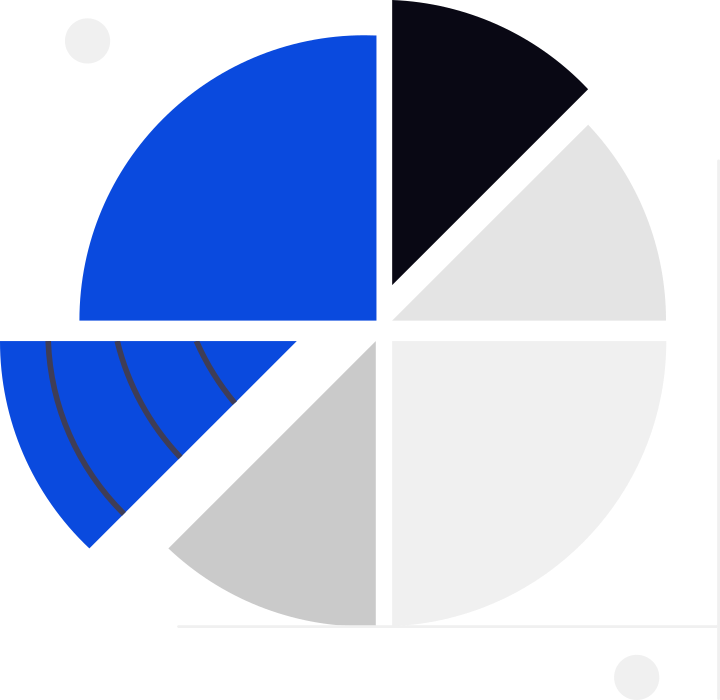
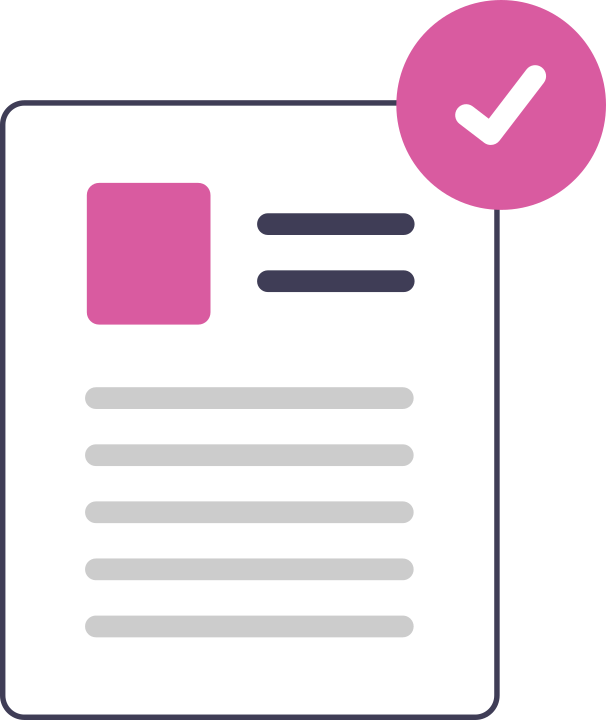

<!DOCTYPE html>
<!-- הגדרת שפה לעברית וכיוון קריאה מימין לשמאל (RTL) -->
<html lang="he" dir="rtl">
<head>
    <meta charset="UTF-8">
    <meta name="viewport" content="width=device-width, initial-scale=1.0">
    <title>HatimaPlus+ | Dashboard</title>

    <!-- בדיקת אבטחה מקדימה מיידית עוד לפני שהדף נטען על המסך -->
    <script>
        const token = localStorage.getItem('authToken');
        if (token === null || token === '') 
        {
            window.location.replace('login.html');
        }
    </script>

    <!-- טעינת פונט Rubik מ-Google Fonts שמירה על אחידות עיצובית עם שאר המערכת -->
    <link rel="preconnect" href="https://fonts.googleapis.com">
    <link rel="preconnect" href="https://fonts.gstatic.com" crossorigin>
    <link href="https://fonts.googleapis.com/css2?family=Rubik:wght@300;400;500;600;700&display=swap" rel="stylesheet">

    <!-- ספריית אייקונים  FontAwesome -->
    <link rel="stylesheet" href="https://cdnjs.cloudflare.com/ajax/libs/font-awesome/6.5.1/css/all.min.css">

    <!-- ספריית ההודעות מעוצבות SweetAlert2 -->
    <script src="https://cdn.jsdelivr.net/npm/sweetalert2@11"></script>

    <!-- קובץ עיצוב ייעודי ונפרד עבור הדשבורד -->
    <link rel="stylesheet" href="dashboard.css">
</head>
<body>

    <!-- מעטפת ראשית של כל האפליקציה מחלקת את המסך לסרגל צדדי ואזור תוכן -->
    <div class="dashboard-layout">

        <!-- סרגל צדדי ימני (Sidebar) -->
        <aside class="sidebar">

            <!-- אזור עליון בסרגל לוגו ושם המערכת -->
            <div class="sidebar-header">
                <div class="logo-text">
                    <!-- תמונת הלוגו מהתיקייה images -->
                    
                </div>
            </div>

            <!-- אזור כפתור העלאת מסמך ופס הפרדה תחתון -->
            <div class="sidebar-action">
                <button class="upload-doc-btn" id="uploadDocBtn">
                    <!-- אייקון העלאה וקטורי מתיקיית התמונות -->
                    
                    <span>העלאת מסמך</span>
                </button>
            </div>
            
            <!-- תפריט הניווט הראשי של המערכת -->
            <div class="menu-links">
                <ul>
                    <!-- כפתור 1 לוח בקרה -->
                    <li>
                        <a href="#" class="menu-item active" data-page="dashboard">
                            
                            <span>לוח בקרה</span>
                        </a>
                    </li>

                    <!-- כפתור 2 מסמכים -->
                    <li>
                        <a href="#" class="menu-item" data-page="documents">
                            
                            <span>ניהול מסמכים</span>
                        </a>
                    </li>

                    <!-- כפתור 3 דוחות -->
                    <li>
                        <a href="#" class="menu-item" data-page="reports">
                            
                            <span>דוחות וסטטיסטיקה</span>
                        </a>
                    </li>

                    <!-- כפתור 4 משימות -->
                    <li>
                        <a href="#" class="menu-item" data-page="tasks">
                            
                            <span>פעולות נדרשות</span>
                        </a>
                    </li>   

                    <!-- כפתור 5 מורשי חתימה ותעודות דיגיטליות -->
                    <li>
                        <a href="#" class="menu-item" data-page="signers">
                            
                            <span>חותמים ואנשי קשר מורשים</span>
                        </a>
                    </li>

                    <!-- כפתור 6 הגדרות מערכת -->
                    <li>
                        <a href="#" class="menu-item" data-page="settings">
                            
                            <span>הגדרות</span>
                        </a>
                    </li>
                </ul>
            </div>

            <!-- אזור תחתון בסרגל פרטי המשתמש המחובר וכפתור התנתקות -->
            <div class="sidebar-footer">
                <div class="user-profile">
                    <!-- תמונת פרופיל / אוואטר SVG מתיקיית svg -->
                    <div class="user-avatar" id="userAvatar">
                        
                    </div>

                    <!-- שם ואימייל של המשתמש שימולאו אוטומטית מ-localStorage -->
                    <div class="user-info">
                        <span class="user-name" id="userNameDisplay">משתמש מחובר</span>
                        <span class="user-email" id="userEmailDisplay">טוען נתונים...</span>
                    </div>

                    <!-- כפתור יציאה / התנתקות מהמערכת -->
                    <button class="logout-btn" id="logoutBtn" title="התנתקות מהמערכת">
                        <i class="fa-solid fa-arrow-right-from-bracket"></i>
                    </button>
                </div>

            </div>

        </aside>

    </div> <!-- סגירת dashboard-layout -->

    <!-- קובץ סקריפט ייעודי לדשבורד (טיפול בטעינת נתונים, התנתקות, ואימות חתימות) -->
    <script src="dashboard.js"></script>
</body>
</html>